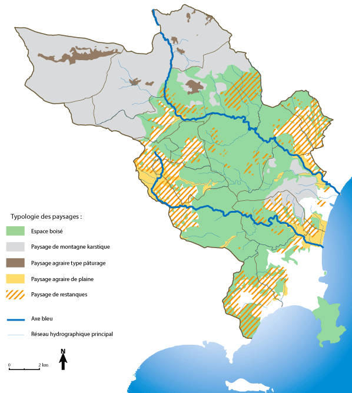

<!--<link href="../css/style.css" rel="stylesheet" type="text/css">-->
<link href="../css/style.css" rel="stylesheet" type="text/css" />

<ion-view view-title="Accueil">
    <ion-content class="padding">
        <div class="list card">
          <div class="item item-body">
            <div>
              <p><b><span class="titre">Les paysages</span></b></p>
              <p class="police">Des rivages de la Méditerranée aux grands plateaux de l’arrière-pays, le territoire de la CASA franchit un 
                dénivelé grandiose : celui du front de l’arc subalpin de Castellane. A ce niveau, le transect présente un singulier 
                raccourci bioclimatique de l’étage méditerranéen à l’étage montagnard. Les petits fleuves côtiers enracinent 
              leurs cours dans ce front, tandis que le Loup doit le franchir en y creusant de spectaculaires gorges.</p>
              <p class="police">&nbsp;</p>
              <div class="div_100"></div>
              <p class="police">&nbsp;</p>
              <p class="police">&nbsp;</p>
              <p>&nbsp;</p>
              <p>&nbsp;</p>
              <p>&nbsp;</p>
              <p>&nbsp;</p>
              <p>&nbsp;</p>
              <p>&nbsp;</p>
              <p>&nbsp;</p>
              <p>&nbsp;</p>
              <p>&nbsp;</p>
                    <p>&nbsp;</p>
            </div>
            </div>
        </div>
    </ion-content>
</ion-view>
